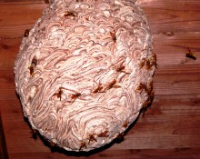

スズメバチの掲示板
スズメバチって、同じ所に巣をかける習性があるのでしょうか？
初めまして。
スズメバチに手を焼いています。
長野県内ですが、別荘２階の軒下に直径１５センチほどの貝殻模様の巣を発見。
はしごを掛け、マグナムジェットを噴射したのち、高枝ばさみを使って、巣を落としました。
が、このとき、メロンのヘタ状に若干巣が残ってしまいました。
そうしたところ、翌日より、スズメバチがぶんぶん飛んできて、２階の窓にぶつかっていたのですが、３日後には、同じ所に巣が出来てしまいました。
たった３日・・・。
これから先、ずっと、作っては壊し、作っては壊し・・・を繰り返さなければならないのでしょうか？
同じ所に作られないコツは有りますか？
というか、巣が作られないようにする方法って、ないものでしょうか？
こんばんは、寺部です。
確かにスズメバチは、同じ場所に巣を作りたがる習性があります。
中途半端に壊しても、働き蜂の勢いが強ければすぐに巣は再構築されてしまいます。
巣をもう一度作ってしまったそうですが、まずはその働き蜂を全部捕まえてしまうか、やっつけてしまいましょう。
その後、残りの巣の部分をなるべく小さくまで削り、残った部分に殺虫剤をしみこませておきます。
こうしますと、蜂の数が少なくなる事や殺虫剤の影響で巣の再建は非常に難しくなります。
巣に接近したり、働き蜂を全て捕まえるのは難しいかもしれませんが、どうぞうまくやってみてください。
お返事ありがとうございます。
そうですね。働き蜂を除かない限り、戻ってきて、作り直してしまうみたいですね。
しかも、どうも、「巣を壊す人」と認知されてしまったようで、庭仕事をしていると、かちかちという威嚇音が聞こえてきます。
しかし、３日たらずで、２０センチまで大きくなるなんて、すごいですね。
ビニール袋に入れたいのですが、軒下まで、足場も窓もなく、はしごも届きません。
冬場に空き家になるのを待って、きれいに撤去するしかないかなと思います。
来年は別のスズメバチだから、同じ所に巣を作るってことは・・・、ないと思いたいです。
３日たらずで２０cmというのはすごいと思いますが、その勢い、キイロスズメバチでしょうか？
キイロスズメバチでしたら刺激にも敏感ですので、十分注意してください。
冬まで待てるようでしたら、そのほうがいいかもしれませんね。
スズメバチは周囲の害虫駆除のプロですので、庭などの害虫を食べてくれている可能性もあります。
どうぞ刺激などしないようにし、うまく共生してみてはどうでしょうか。
最後に、一度大きく刺激してしまったスズメバチの巣というのはとても怒りっぽくなっています。
スズメバチの近くを通る際は十分気をつけてください。
キイロスズメバチのようです。
２階の軒下に巣がぶら下がっているのですが、その真下、１階部分くらいの位置に、アシナガバチの巣があったようですが、多分襲われたのでしょう、巣の中で蜂が死んでいます。
キイロスズメバチは、やはり攻撃性が強いですね。
で、冬まで待とうかと思うのですが、１、２階軒下にある場合、その真下の地面を通ることは、危なくないのでしょうか（つまり、危険区域はどの範囲でしょうか）？
２、「冬」とは、いつ頃を指すのですか？１１月頃にはいなくなりますか？
３、冬に巣を撤去すれば、来年また作られる、巣を残しておけば、来年利用されるということはあるのでしょうか？
それと、軒下にキツツキに穴を開けられており、夏休みの終わりに補修する予定なのですが、スズメバチは、キツツキが開けた軒下の穴を利用して、軒の内部に巣を作るということはないでしょうか？
スズメバチとの共生って、難しくありませんか？
自信がありません。
スズメバチとの共生を考える時は、おっしゃるとおり攻撃範囲を知る必要があります。
この攻撃範囲というのはその蜂の巣の勢い、働き蜂の数などいろいろな要因によってずいぶん違ってきます。
なので現場を見ない限り、どこまでが危ないかというのはなかなか判断が難しいものがあります。
ですが、刺激をしない限り２階の巣から１階へ攻撃されるのは正直考えにくいように思われます。
蜂の行動等を良く観察し、危険区域を見極める必要があります。
巣の下をゆっくり通り、もしハチが来ても手で払ったりせず、威嚇しているかどうか様子を良く見てはいかがでしょうか？
「冬」といっても１１月ではまだ働き蜂がいる可能性があります。心配でしたら１２月、もしくはそれ以降でしたら大丈夫かと思います。
巣をつついてみてハチが出てくるようであれば、まだ危険です。
ただし外の気温が低ければ、ハチはまず自分の体温を上げるために翅を震わせ、飛び出すまでには時間がかかります。
なので完全に寒くなれば危険性は下がります。
基本的にスズメバチは、一度使った巣には二度と巣づくりはしません。
巣を残しておいても問題ありません。
ただし昨年の巣の一部を使い、新しい巣作りを行うというケースがあったというまれな報告は聞いたことがあります。
キツツキの件ですが、軒下に開けられた穴に巣を作られるということはありますが、それは来年以降で、キイロスズメバチだと初期巣の場合です。
この時期になって、今からこのキイロスズメバチが新しく穴に入り巣づくりを行うことはとても考えにくい事です。
来年以降に別のキイロスズメバチ、モンスズメバチなどが初期の段階で巣づくりを行われてしまうことはあっても、今でしたら大丈夫です。
スズメバチ、特にキイロスズメバチの場合、ちょっとした刺激で反応し刺されてしまう場合もありますが、蜂の攻撃範囲を知り、行動を良く見ていれば何とかなるとは思います。
しかし、ハチのことをいつも気にしていなければならない点からいえば、生活にストレスを抱えてしまう点もありますね。
どうしても共生は難しいようでしたら、業者に依頼し、駆除という方向性もあるかと思います。
どうぞ無理をなさらぬよう、十分考えてみてください。
巣は、冬までこのままにしておこうと思います。
撤去しても、かえって、他の巣作りを招くだけのような気もしますし・・・。
スズメバチが巣を作るのは、農家にとっては、縁起がいいそうですし・・・。
今回、スズメバチが攻撃的になっているのも、考えてみれば、最初によく分からないまま巣を落としたことに原因が有る訳で、 ・・・。
ありがとうございました。
-
生け捕り捕獲など

-
種類や生活史・巣の場所等

-
被害者や対策・対応等

-
すずめばちやについて